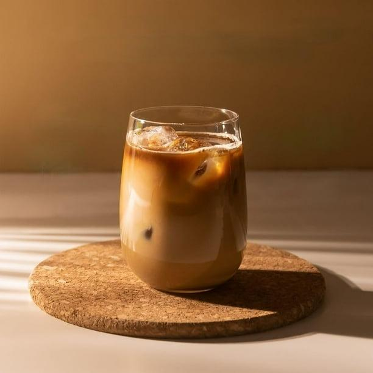
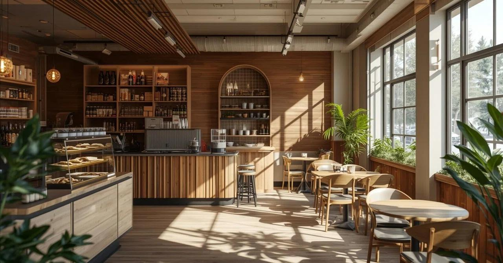
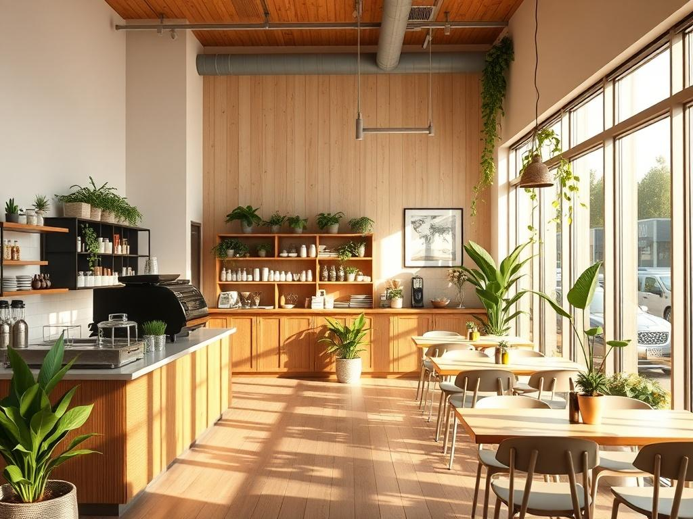
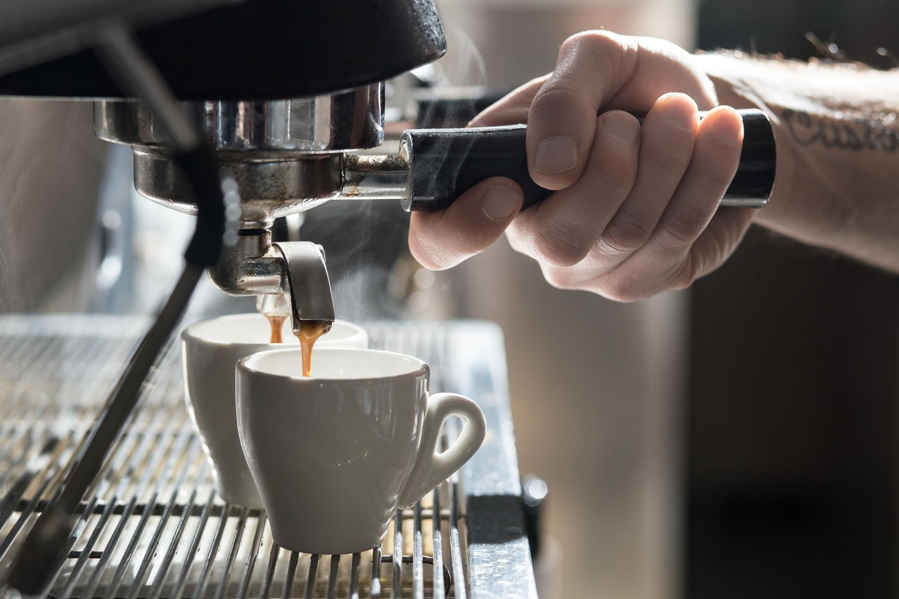
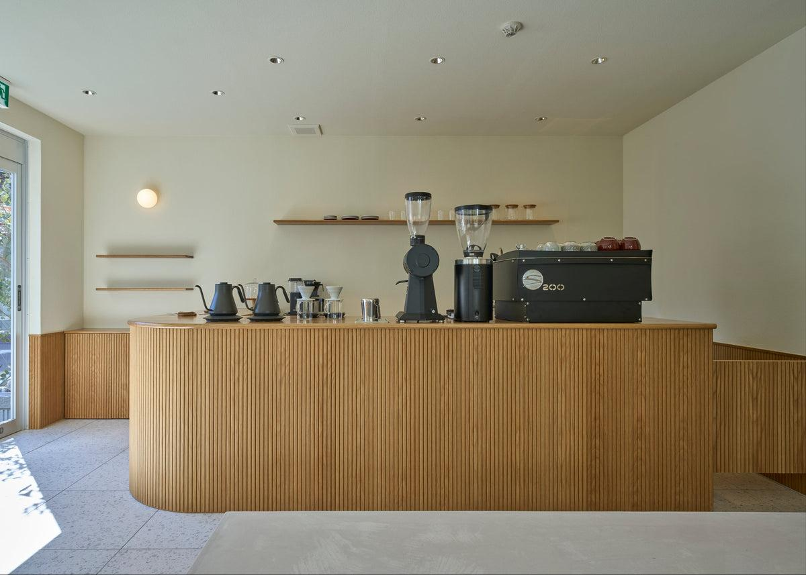
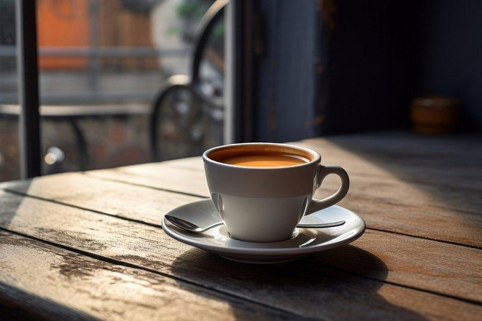
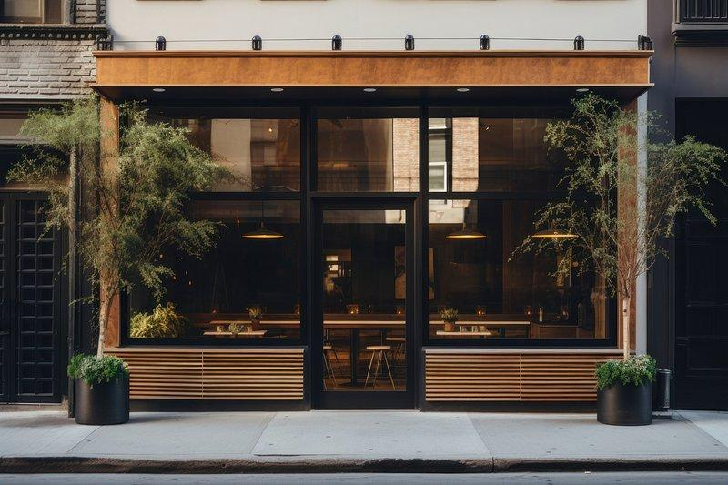
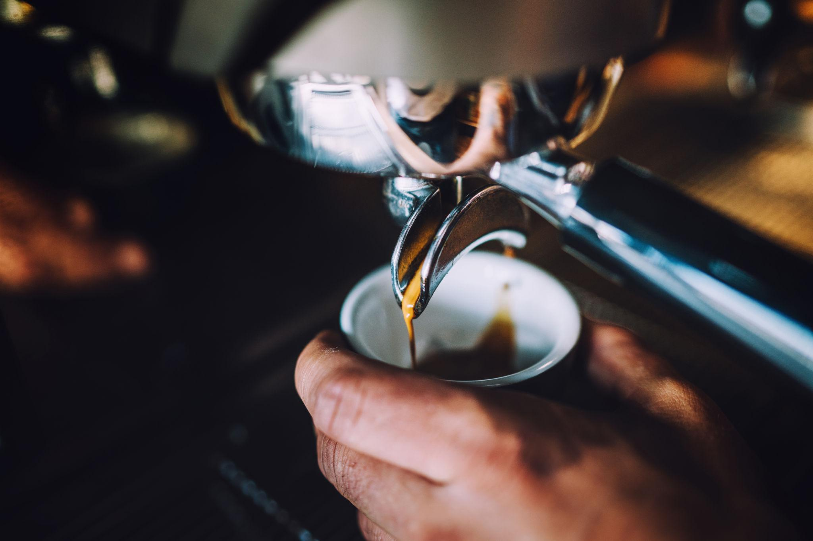

Es Kopi Sadeyan
Signature blend dengan gula aren pilihan.

COFFEE · FOOD · GOOD MOMENTS
Tempat untuk menikmati secangkir kopi, makanan favorit, dan waktu berkualitas dalam suasana yang nyaman.

A PLACE TO SLOW DOWNCERITA KAMI
SADEYAN Coffee & Eatery hadir sebagai tempat untuk beristirahat sejenak dari kesibukan. Nikmati pilihan kopi dan makanan dalam suasana hangat, santai, dan bersahabat.
Datang untuk secangkir kopi. Tinggal untuk suasananya.
Temukan lokasi kami →THE SADEYAN EXPERIENCE
Ruang yang nyamanSuasana hangat untuk bersantai dan berkumpul.
Kopi dan sajian pilihanTemani waktumu dengan menu yang menggugah selera.
Waktu yang berkualitasTempat untuk berbincang, bekerja, atau sekadar rehat.
SEKILAS SADEYAN
Lihat lebih dekat suasana, sajian, dan sudut-sudut SADEYAN.





KAMI MENUNGGU KUNJUNGANMU
Ingin tahu lebih banyak tentang SADEYAN Coffee & Eatery? Hubungi kami atau kunjungi lokasi kami.
Jl. Raya Pengasinan, Gunung Sindur, Kabupaten Bogor, Jawa Barat
08.00 – 23.00 · Setiap Hari